h = 4.1357e-15 eV s = 6.626e-34 J s
c ~ 3.00e8 m/s
When converting from an energy to a wavelength, you'll need to make sure that you are using the same unit system. In the CLEA labs, they output an energy in terms of electron volts. An electron volt is a particularly useful unit for what we are doing, BUT it does require an extra step to convert with SI units.
Since this is not a course on unit converstions and doing these converstions is not essential to the understanding or objective of the lab, I have created this HTML tool to help out
Enter energy here:
You can either enter the energy for this in electron volts OR in joules.
eV
= J
If you want to enter something in scientific notation, follow this convention: "1.602e-19"
Wavelength:
nm
We've taken the liberty of rounding this to one decimal place.
Hint: If you're getting an answer of 0.0 nm or something VERY large, double-check the units of your energy!